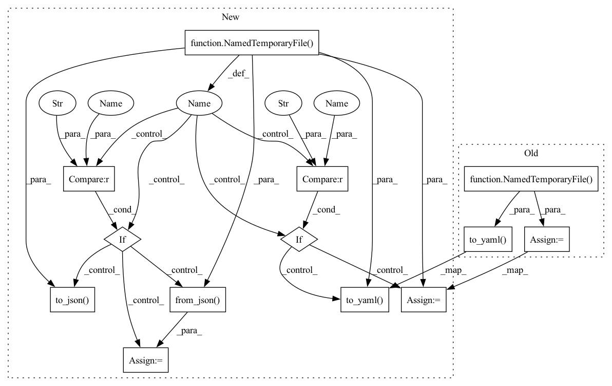

Pattern ID :10632

Before Change
def test_mixed_cut_set_serialization(cut_set_with_mixed_cut):
with NamedTemporaryFile() as f:
cut_set_with_mixed_cut.to_yaml(f.name)
restored = CutSet.from_yaml(f.name)
assert cut_set_with_mixed_cut == restored
After Change
]
)
def test_mixed_cut_set_serialization(cut_set_with_mixed_cut, format, compressed):
with NamedTemporaryFile(suffix=".gz" if compressed else "") as f:
if format == "yaml":
cut_set_with_mixed_cut.to_yaml(f.name)
restored = CutSet.from_yaml(f.name)
if format == "json":
cut_set_with_mixed_cut.to_json(f.name)
restored = CutSet.from_json(f.name)
assert cut_set_with_mixed_cut == restored
def test_filter_cut_set(cut_set, cut1):
In pattern: SUPERPATTERN
Frequency: 3
Non-data size: 13
Instances
Fragment ID: 36871611
Project Name: lhotse-speech/lhotse
Commit Name: be755b6ba32b1270945f3f0c8bcfbe7cf278bbe4
Time: 2020-09-07
Author: petezor@gmail.com
File Name: test/cut/test_cut_set.py
M Class Name: AnonimousClass
N Class Name: AnonimousClass
M Method Name: test_mixed_cut_set_serialization(3)
N Method Name: test_mixed_cut_set_serialization(1)
M Parent Class:
N Parent Class:
M File Name: test/cut/test_cut_set.py
N File Name: test/cut/test_cut_set.py
M Start Line: 39
M End Line: 42
N Start Line: 61
N End Line: 69
'>
Before Change
gender="male"
)
])
with NamedTemporaryFile() as f:
supervision_set.to_yaml(f.name)
restored = supervision_set.from_yaml(f.name)
assert supervision_set == restored
After Change
gender="male"
)
])
with NamedTemporaryFile(suffix=".gz" if compressed else "") as f:
if format == "yaml":
supervision_set.to_yaml(f.name)
restored = supervision_set.from_yaml(f.name)
if format == "json":
supervision_set.to_json(f.name)
restored = supervision_set.from_json(f.name)
assert supervision_set == restored
def test_add_supervision_sets():
'>
Fragment ID: 36871615
Project Name: lhotse-speech/lhotse
Commit Name: be755b6ba32b1270945f3f0c8bcfbe7cf278bbe4
Time: 2020-09-07
Author: petezor@gmail.com
File Name: test/test_supervision_set.py
M Class Name: AnonimousClass
N Class Name: AnonimousClass
M Method Name: test_supervision_set_serialization(2)
N Method Name: test_supervision_set_serialization(0)
M Parent Class:
N Parent Class:
M File Name: test/test_supervision_set.py
N File Name: test/test_supervision_set.py
M Start Line: 83
M End Line: 85
N Start Line: 78
N End Line: 99
'>
Before Change
def test_simple_cut_set_serialization(cut_set):
with NamedTemporaryFile() as f:
cut_set.to_yaml(f.name)
restored = CutSet.from_yaml(f.name)
assert cut_set == restored
After Change
]
)
def test_simple_cut_set_serialization(cut_set, format, compressed):
with NamedTemporaryFile(suffix=".gz" if compressed else "") as f:
if format == "yaml":
cut_set.to_yaml(f.name)
restored = CutSet.from_yaml(f.name)
if format == "json":
cut_set.to_json(f.name)
restored = CutSet.from_json(f.name)
assert cut_set == restored
@pytest.mark.parametrize(
'>
Fragment ID: 36871613
Project Name: lhotse-speech/lhotse
Commit Name: be755b6ba32b1270945f3f0c8bcfbe7cf278bbe4
Time: 2020-09-07
Author: petezor@gmail.com
File Name: test/cut/test_cut_set.py
M Class Name: AnonimousClass
N Class Name: AnonimousClass
M Method Name: test_simple_cut_set_serialization(3)
N Method Name: test_simple_cut_set_serialization(1)
M Parent Class:
N Parent Class:
M File Name: test/cut/test_cut_set.py
N File Name: test/cut/test_cut_set.py
M Start Line: 32
M End Line: 35
N Start Line: 41
N End Line: 49